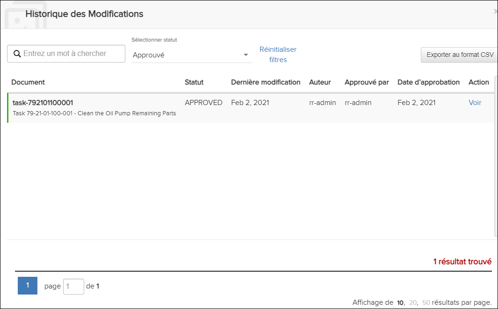
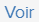
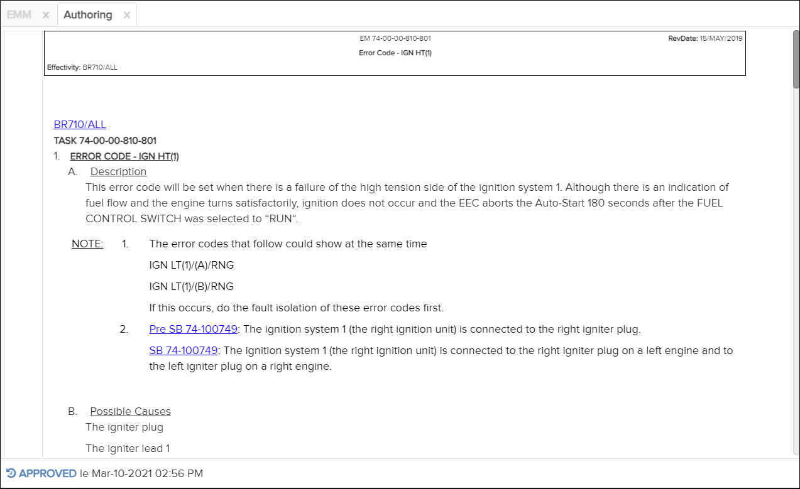
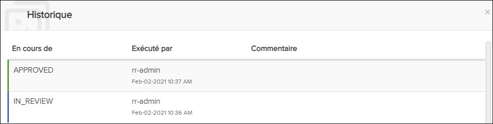

Non applicable pour Pinpoint Standalone Light.
Les utilisateurs disposant des autorisations appropriées peuvent utiliser les boîtes de dialogue Historique des Modifications et Historique pour auditer les modifications de création.
Historique des Modifications Dialogue

l'action sur le côté gauche de la boîte de dialogue pour ouvrir le brouillon approuvé (voir la capture d'écran ci-dessus).
Création d'Onglet - Brouillon approuvé
Le brouillon montre quand il a été approuvé en bas à gauche. Cliquez sur ce texte pour ouvrir le journal Historique qui fournit des informations supplémentaires sur l'approbation du projet.

Journal historique